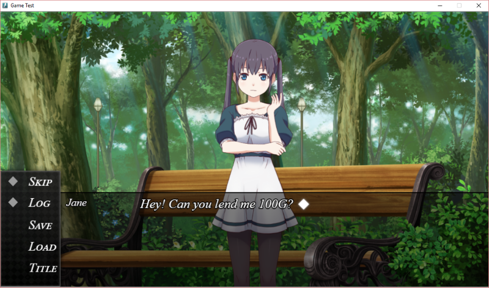

Live2D 支持
Visual Novel Maker 允许您使用 Live2D 角色在您的视觉小说中。

特别协议
这不仅仅是 Live 2D，DEGICA Co. Ltd 和 Live2D Inc 共同拥有一份定制协议，当您在 VN Maker 使用 Live2D 时，该协议为您提供了一些特殊的可能性！
这个特殊协议允许您在 VN Maker 中使用 Live2D 和 Live2D 示例模型，并且您可以发行甚至出售您的游戏，而无需任何额外的许可协议或费用。
启用 Live2D 支持
VN Maker 包含 Live2D，但是您必须下载并安装用于 VN Maker 的 Live2D 支持 DLC。